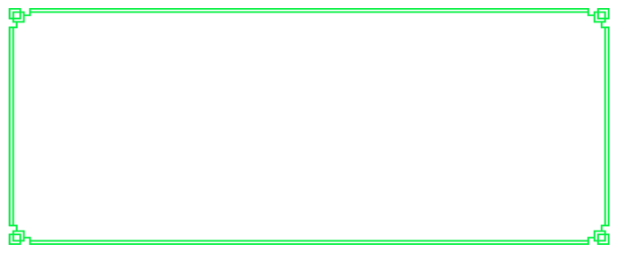

下面是团队故事 ↓
星辰项目组是依托于大学生公共项目实验室，以3D媒体算法为核心，在智能硬件基础之上，通过Bluetooth4.0、WIFI等无线互联技术，采用WEB终端、APP手机终端进行交互控制立体显示设备，实现不同的空间立体展示效果的创新团队。团队主要围绕立体显示主题进行研究，从媒体片源的获取与算法转换处理，到显示设备的结构设计与数据可视化分析，以及用户体验的生态系统的全方位搭建，涉及的技术领域广泛，包括国内相关技术空白领域。团队将通过不断研究，攻克难关，填补技术空白，力争成为立体显示领域的先驱。
团队创始人曹为主，来自于光电信息学院电子12级，在2015年暑期实训中进行了空间立体显示雏形的研究，并通过项目发布会吸引了投资人的关注与外界支持。实训回校后，曹为主以该项目为起点，召集了一群志同道合有想法的学生，共同创立了星辰项目组。
团队目前拥有八名成员，主要来自于我校光电信息学院大二大三学生，分别专研于硬件搭建、算法控制、WEB设计、Android编程、结构设计等不同领域，是一只真正意义上的多元化并且充满活力的年轻团队。多种不同技术共同服务于同一件产品，这将会进一步促进产品朝创新方向不断发展。
下面是团队和工作室照片↓